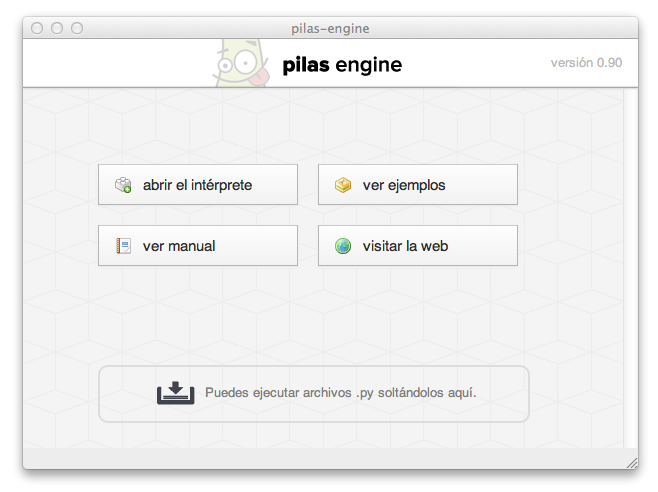
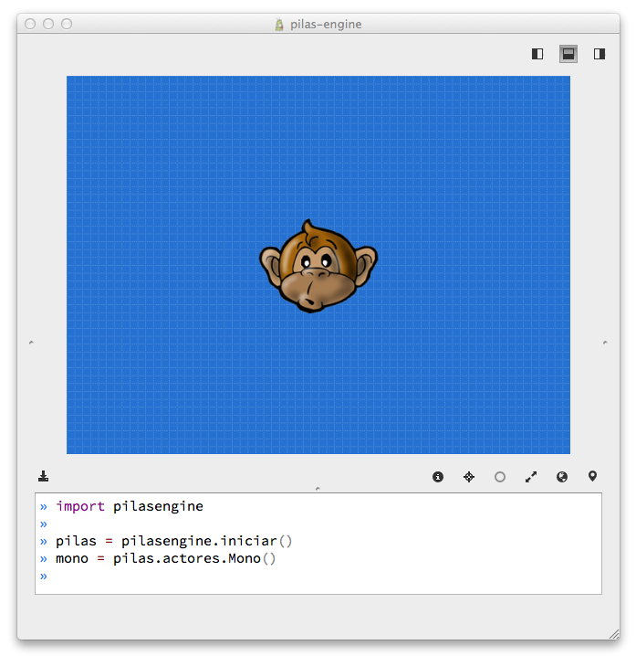

Empezando, los primeros pasos con pilas
Si ya tienes instalada la biblioteca podemos comenzar a realizar nuestros primeros pasos con la biblioteca.
pilas incluye un intérprete interactivo que te permite escribir código de python y autocompletar el nombre de las funciones. Aunque si quieres, puedes usar el intérprete estándar de python, abriendo un terminal de texto y ejecutando el comando python.
Iniciando pilas
Para ejecutar el asistente de pilas, abre un terminal y ejecuta el comando pilas.
En tu pantalla tiene que aparecer una ventana como esta.

Intérprete de pilas
Haz click en Abrir intérprete y aparecerá esta ventana.

La ventana se divide en dos partes. La parte de abajo muestra el editor. Todo lo que escribas en el editor se ejecutará automáticamente. El resultado se muestra en la parte de arriba.
Iniciando la biblioteca
La parte de arriba es la que utilizaremos para interactuar con el motor. Y mas adelante será la única pantalla que verán los usuarios de nuestros juegos.
Puedes ver que el intérprete viene con algunas líneas de ejemplo.
import pilas
pilas.iniciar()
mono = pilas.actores.Mono()
La línea import pilasengine le dice a Python que use la librería pilas. La
función pilas = pilasengine.iniciar() prepara la ventana (entre otras cosas) para empezar
a usar pilas. Luego la línea mono = pilas.actores.Mono(), construye al personaje
con cara de mono que aparecerá en la pantalla y también le dará un nombre.
La función pilasengine.iniciar() tiene mas parámetros, pero los veremos mas
adelante. Por ahora, continuaremos con lo básico.
Creando personajes
Un concepto importante en pilas es del de actores. Un actor en pilas es un
objeto que aparece en pantalla, tiene una posición determinada y se puede manipular.
Por ejemplo, una nave, un enemigo, una medalla... etc.
Para agilizar el desarrollo de juegos se incluyen varios actores dentro del
motor, uno de ellos es Mono, un simpático chimpancé.
Nota:
Puedes ver todos los actores disponibles en pilas ejecutando
pilas.actores.listar_actores().
Tenemos al actor mono. Para indicarle acciones solo tenemos que utilizar su nombre y sentencias simples.
Por ejemplo, para que el personaje cambie su expresión, podemos usar sentencias cómo:
mono.sonreir()
o:
mono.gritar()
En cualquiera de los dos casos, el personaje cambiará su aspecto y emitirá un sonido.

Incluso podríamos decirle al personaje que tiene que hablar algo, por ejemplo:
mono.decir("Hey, bienvenido a pilas!!!")
y el personaje mostrará exactamente lo que le indicamos que tiene que decir, cómo si fuera un personaje de comic:

A partir de ahora, comenzaremos a escribir algunos ejemplos. Ten en cuenta que no es necesario que escribas todo el código de los ejemplos, el intérprete de pilas te permite autocompletar sentencias mientras escribes.
Cosas en común para los actores
Internamente, Mono es un actor, así que encontraremos mucha funcionalidad en él que la tendrán el resto de los actores.
Veamos algunas de estas características:
Posición
Podemos cambiar la posición de un actor mediante las propiedades x e y:
mono.x = 100
mono.y = 100
Ten en cuenta que x e y son las coordenadas de posición en el escenario. Por lo tanto el punto (0, 0) es el centro de la ventana. Y x aumenta hacia la derecha e y hacia arriba.

Este espacio de referencia se puede observar en detalle si pulsas la tecla F12, ahí observarás que el movimiento del mouse está asociado a una coordenada y cada actor también.
Nota:
Para que tenga efecto, debes tener seleccionada la ventana de resultado (parte de arriba). Haz click sobre ella antes de pulsar F12.
Escala
Todo actor tiene un atributo para indicar su tamaño en pantalla, el atributo escala (que originalmente vale 1):
mono.escala = 2
Rotación
También contamos con un atributo que indica la rotación en grados que debe tener el actor en pantalla. El atributo rotacion:
mono.rotacion = 40

o bien:
mono.rotacion = 80

La rotación siempre se indica en grados, e indica el grado de inclinación hacia la derecha.
Animaciones
Cualquiera de todas las propiedes que vimos anteriormente se pueden usar para hacer animaciones, por ejemplo, con el siguiente código podríamos indicarle al actor que dé una vuelta completa:
mono.rotacion = [360]
¿por qué?, porque los caracteres [ y ] representan una lista de valores, y cuando pilas ve esta lista asignada a un atributo de pilas, intenta hacer una animación.
Veamos otro ejemplo, si queremos que un personaje como el mono se mueva horizontalmente con una animación podemos escribir esto:
mono.x = [-200, 200]
Estas animaciones las veremos mas adelante, pero de todas formas es interesante observar que son listas comunes y corrientes.
Python permite multiplicar listas, así que podríamos multiplicarlas para repetir la animación.
# Sólo en python.
mono.x = [-200, 200] * 5 # ir de una lado a otro 5 veces.
o incluso podríamos alterarles la velocidad, digamos que el ir y regresar se tiene que hacer muy lento, en unos 10 segundos:
mono.x = [-200, 200], 10
Pidiendo ayuda
Recuerda que cada componente de pilas está documentado como un módulo de python. Por lo tanto, puedes ejecutar una sentencia cómo:
help(mono)
y aparecerán en pantalla todos los instructivos de la funcionalidad del actor.
Incluso puedes usar la función pilas.ver para conocer el código fuente de
cualquier cosa de pilas. Por ejemplo podemos el código completo del mono
ejecutando la sentencia:
pilas.ver(mono)
Eliminando a un actor
Para eliminar un actor de la escena tienes que llamar al método eliminar:
mono.eliminar()
Conclusión
Hemos visto los pasos principales para gestionar actores. Ten en cuenta que el módulo pilas.actores es donde se guardarán todos los actores.
Un buen ejercicio es ponerse a investigar el módulo actores. Hay muchos actores, estos son algunos ejemplos de código para probar:
b = pilas.actores.Bomba()
b.explotar()
p = pilas.actores.Pingu() # se mueve con el teclado.

Es todo por ahora, seguí leyendo o comenzá a explorar por tu cuenta. A divertirse!